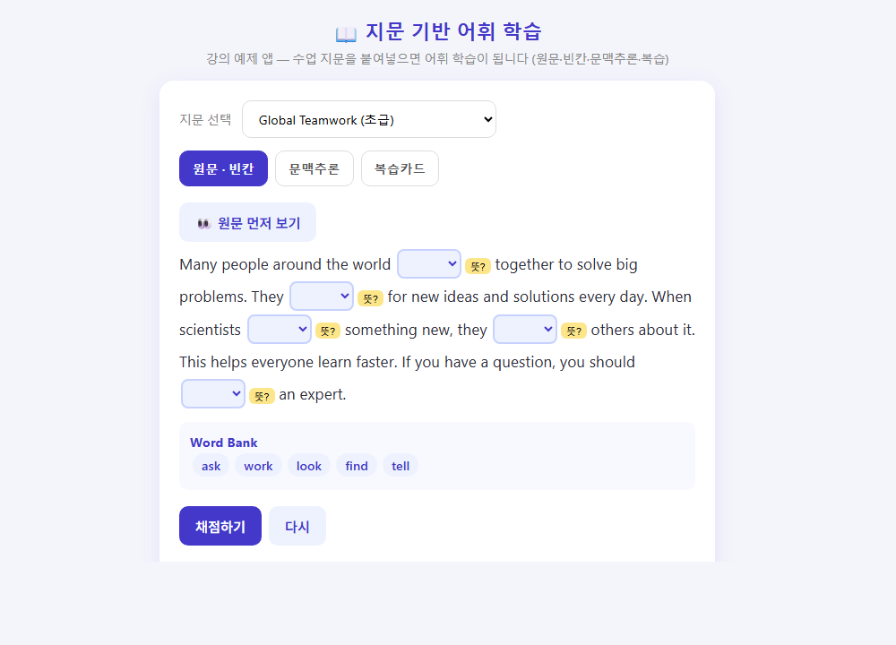
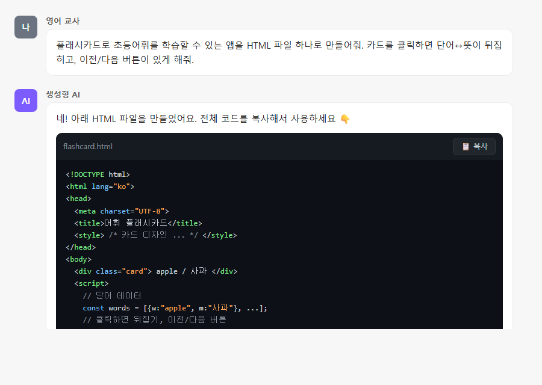
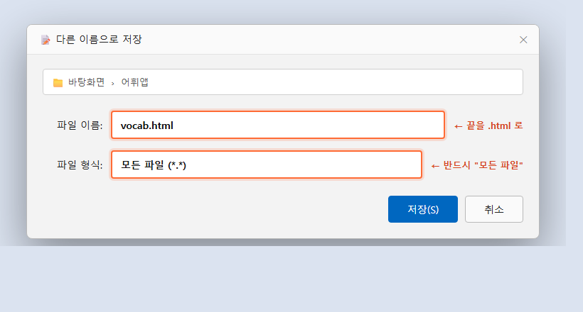

코딩 없이,
내 어휘 학습앱 만들기
AI에게 말로 시키는 바이브 코딩
단어장 기반 워크숍 · 지문 기반 강의 — 한 세션 통합
연수가 끝나면, 여러분 손에
① 동작하는 앱
HTML 한 파일. 더블클릭하면 실행되는 진짜 어휘 학습앱.
② 공유 링크
학생에게 카톡으로 보낼 수 있는 배포 링크.
③ 재사용 틀
다음 단어장·지문을 5분 만에 갈아 끼우는 템플릿.
여러분은 코드를 짜는 사람이 아니라
요구를 명확히 설명하는 사람입니다.
좋은 앱 = 좋은 코드가 아니라
좋은 데이터 + 명확한 학습 설계 — 그 둘은 교사가 이미 전문가.
무엇을 재료로 삼는가
| 단어장 기반 (워크숍) | 지문 기반 (강의) | |
|---|---|---|
| 재료 | 단어 리스트 | 수업 지문 통째로 |
| 맥락 | 없음 (단어→뜻) | 있음 (문장 속 단어) |
| 활동 | 플래시카드·퀴즈 | 빈칸·문맥추론·복습 |
| 강점 | 빠른 시작 | 맥락 학습, 독해 연계 |
이런 게 나옵니다 🎉
아래 버튼을 눌러 데모를 새 탭에서 열어보세요


둘 다 설치·계정 필요 없음. 더블클릭으로도 실행됩니다.
바이브 코딩 루프
기능이 간단한 앱을 만들어본다 — "플래시 카드로 초등어휘를 학습할 수 있는 앱을 만들어줘"
직접 써본다 — 브라우저에서 클릭
고칠 점을 글로 작성 — 생성형 AI 입력창에 지침 입력 (예: "단어에 음성을 추가해줘")
반복 — 한 번에 하나씩, 에러는 그대로 복붙
데이터가 곧 앱의 품질
"잘 만든 단어장"의 황금 표준 — 8컬럼
👉 그대로 가져다 쓰세요. 30~50단어면 충분.
이렇게 시작하세요
AI가 HTML 코드를 만들어 줍니다

프롬프트를 넣으면 이렇게 전체 HTML 코드가 생성됩니다 → 📋 복사 버튼으로 전부 복사.
메모장에 .html 로 저장

메모장 열기 → 코드 붙여넣기(Ctrl+V) → 다른 이름으로 저장 → 파일 형식 "모든 파일" 선택 → 이름 끝을 vocab.html 로.
실행 → 다듬고 → 완성
직접 실행 — 저장한 vocab.html 을 더블클릭 → 브라우저에서 확인
데이터 넣기 — 초등 어휘 CSV(스포츠·가족·food)를 붙여넣어 단어 교체
기능 한 개씩 추가 — "퀴즈 추가해줘" → "간격반복 추가해줘"
완성 예시와 비교 — 아래 데모와 맞춰보며 마무리
지문 → 어휘 파이프라인
① 원문 → ② 타겟 어휘 → ③ 빈칸 지문
→ ④ Word Bank → ⑤ 학습 활동 → ⑥ 배포
교사가 단어를 **굵게** 표시 → 그 자리가 빈칸이 됩니다.
지문 기반의 진짜 힘 — 문맥 학습
🔍 문맥추론
문장을 보고 단어 뜻을 먼저 추측 → 공개
🔄 동의어 치환
바꿔 쓴 문장에서 원래 단어 찾기
🔗 콜로케이션
자주 함께 쓰는 표현 짝 맞추기
🃏 복습카드
지문 속 예문과 함께 간격 반복
한 번 만들고 끝? ❌
재사용 템플릿을 만드세요.
→ 매주 새 지문을 5분 만에. 앱이 아니라 앱 찍어내는 틀을 가져갑니다.
내 컴퓨터 → 학생 휴대폰
파일 이름을 index.html 로 저장
app.netlify.com/drop 에 드래그 앤 드롭
몇 초 후 생긴 링크를 학생에게 공유
교사가 빠지는 함정 3가지
- 완벽한 앱을 처음부터 → 카드 한 장부터. 80%는 못 끝낸다.
- 데이터를 대충 → 단어장·지문 품질 = 앱 품질.
- AI를 마법으로 기대 → AI는 "설명한 만큼" 만든다.
더 하고 싶어지면
| 목표 | 필요한 것 |
|---|---|
| 지문 붙이면 어휘 자동 추출 | AI API 키 (Gemini 무료) |
| 학생별 진도·오답 저장 | Firebase |
| 난이도·뜻 자동 채움 | vocabulary-db 9000단어 연동 |
| 수능형 적응 출제 | IRT 진단 데이터 |
여러분의 수업 자료는
이미 완벽한 학습 데이터입니다.
과거엔 개발자가 필요했습니다.
이제는 붙여넣고 말로 설명하는 것만으로 충분합니다.
자, 시작해볼까요? 🚀